Last updated: 2025-02-07
Checks: 7 0
Knit directory: sznurkowska-met-paths/
This reproducible R Markdown analysis was created with workflowr (version 1.7.1). The Checks tab describes the reproducibility checks that were applied when the results were created. The Past versions tab lists the development history.
Great! Since the R Markdown file has been committed to the Git repository, you know the exact version of the code that produced these results.
Great job! The global environment was empty. Objects defined in the global environment can affect the analysis in your R Markdown file in unknown ways. For reproduciblity it’s best to always run the code in an empty environment.
The command set.seed(20250206) was run prior to running
the code in the R Markdown file. Setting a seed ensures that any results
that rely on randomness, e.g. subsampling or permutations, are
reproducible.
Great job! Recording the operating system, R version, and package versions is critical for reproducibility.
Nice! There were no cached chunks for this analysis, so you can be confident that you successfully produced the results during this run.
Great job! Using relative paths to the files within your workflowr project makes it easier to run your code on other machines.
Great! You are using Git for version control. Tracking code development and connecting the code version to the results is critical for reproducibility.
The results in this page were generated with repository version 30d581d. See the Past versions tab to see a history of the changes made to the R Markdown and HTML files.
Note that you need to be careful to ensure that all relevant files for
the analysis have been committed to Git prior to generating the results
(you can use wflow_publish or
wflow_git_commit). workflowr only checks the R Markdown
file, but you know if there are other scripts or data files that it
depends on. Below is the status of the Git repository when the results
were generated:
Ignored files:
Ignored: .Rhistory
Ignored: .Rproj.user/
Ignored: data/patients/
Ignored: data/resources/
Ignored: data/rnaseq/
Ignored: data/seer/
Ignored: output/p26532_o26674/
Ignored: output/p26532_o28268/
Ignored: output/p26532_o28268_o34980/
Ignored: output/p26532_o34980/
Untracked files:
Untracked: analysis/br16-10x_rnaseq-cancer_cells-main.Rmd
Untracked: analysis/br16-10x_rnaseq-qc.Rmd
Untracked: analysis/mvt1-tumor-10x_rnaseq-qc.Rmd
Untracked: analysis/templates/
Untracked: code/R-functions/
Untracked: configuration/
Untracked: workflowr_update.R
Unstaged changes:
Modified: .gitignore
Modified: sznurkowska-met-paths.Rproj
Note that any generated files, e.g. HTML, png, CSS, etc., are not included in this status report because it is ok for generated content to have uncommitted changes.
These are the previous versions of the repository in which changes were
made to the R Markdown
(analysis/nsg-normal-10x_rnaseq-main.Rmd) and HTML
(docs/nsg-normal-10x_rnaseq-main.html) files. If you’ve
configured a remote Git repository (see ?wflow_git_remote),
click on the hyperlinks in the table below to view the files as they
were in that past version.
| File | Version | Author | Date | Message |
|---|---|---|---|---|
| Rmd | 30d581d | Francesc Castro-Giner | 2025-02-07 | Add nsg normal analysis |
Setup environment
knitr::opts_chunk$set(results='asis', echo=TRUE, message=FALSE, warning=FALSE, error=FALSE, fig.align = 'center', fig.width = 3.5, fig.asp = 0.618, dpi = 600, dev = c("png", "pdf"), fig.showtext = FALSE)
options(stringsAsFactors = FALSE)
use_seed <- 1100101
set.seed(use_seed)
if(!dir.exists(params$output_dir))
dir.create(params$output_dir, recursive = TRUE, showWarnings = FALSE)Load packages
library(tidyverse)
library(showtext)
library(foreach)
library(DT)
library(knitr)
library(kableExtra)
library(cowplot)
library(colorblindr)
library(ggbeeswarm)
library(arsenal)
library(RColorBrewer)
library(ggpubr)
library(pheatmap)
library(patchwork)
library(openxlsx)
library(magrittr)
library(scater)
library(DropletUtils)
library(Seurat)
library(scran)
library(BiocSingular)
library(batchelor)
library(bluster)
library(scDblFinder)
library(speckle)
library(miloR)
library(ComplexHeatmap)
library(clusterProfiler)
library(GSVA)
library(circlize)
library(corrplot)
library(factoextra)
library(PCAtools)
library(SingleR)Set font family for figures
font_add("Helvetica", "./configuration/fonts/Helvetica.ttc")
showtext_auto()Load ggplot theme
source("./configuration/rmarkdown/ggplot_theme.R")
source("./configuration/rmarkdown/color_palettes.R")Load custom functions
source('./code/R-functions/gse_omnibus.r')
source('./code/R-functions/gse_report.r')
clean_msigdb_names <- function(x) x %>% gsub('REACTOME_', '', .) %>% gsub('WP_', '', .) %>% gsub('BIOCARTA_', '', .) %>% gsub('KEGG_', '', .) %>% gsub('PID_', '', .) %>% gsub('GOBP_', '', .) %>% gsub('_', ' ', .)Load utils functions
source('./code/R-functions/heatmap_scale.R')Clean files generated in previous runs
rmd_file <- current_input()
if(!is.null(rmd_file)) {
figures_dir <- file.path('./docs/figure',rmd_file)
if(dir.exists(figures_dir)) {
unlink(file.path(figures_dir, "*"))
}
}sce_files <- system(paste("find", params$cellranger_count_dir, "-maxdepth 2 -type f -regex '.*/sce_normalized[.]rds$'"), intern = TRUE) %>% sort
sce <- readRDS(sce_files) # keep the name of sce from the report with data integration
# Modify coldata and rownames
rownames(sce) <- make.names(rowData(sce)$gene_name, unique = TRUE)scDblFinder : We suggest using the cluster-based approach when the datasets are segregated into clear clusters, and the random one for the rest (e.g. developmental trajectories).
sce <- scDblFinder(
sce,
samples = sce$Sample,
BPPARAM=BiocParallel::MulticoreParam(params$ncores/2, RNGseed=use_seed))
# Annotate samples and clusters
if(!exists('ref_mouse_imm'))
ref_mouse_imm <- celldex::ImmGenData()
# Run SingleR at cell level with main label
pred <- SingleR(test=sce,
ref=ref_mouse_imm,
labels=ref_mouse_imm$label.main,
de.method="classic",
BPPARAM=BiocParallel::MulticoreParam(params$ncores, RNGseed=use_seed))
sce$pruned.labels <- pred$pruned.labels
# Run SingleR at cluster level with main label
pred_cluster <- SingleR(test=sce,
clusters=sce$cluster_id_batch,
ref=ref_mouse_imm,
labels=ref_mouse_imm$label.main,
BPPARAM=BiocParallel::MulticoreParam(params$ncores, RNGseed=use_seed))
pred_cluster_simplified <- pred_cluster %>%
data.frame %>%
dplyr::select(labels,pruned.labels) %>%
dplyr::rename(celltype_cluster_labels = labels, celltype_cluster_pruned.labels = pruned.labels) %>%
rownames_to_column('cluster_id_batch')
colData(sce) <- colData(sce) %>% data.frame %>%
mutate(cluster = as.character(cluster_id_batch)) %>%
left_join(pred_cluster_simplified) %>%
mutate(cluster = factor(cluster)) %>%
DataFrame
# keep a version with doublets for QC visualization
saveRDS(sce, file.path(params$output_dir, 'sce_integrated-keep_doublets.rds'))Here we remove - Clusters with a high proportion of doublets as detected in the Additional doublet detection - Clusters with high proportion of mitochondrial reads AND low library size
if(!exists('sce'))
sce <- readRDS(file.path(params$output_dir, 'sce_integrated-keep_doublets.rds'))
# plotReducedDim(sce, dimred = 'UMAP', color_by = 'scDblFinder.score')
# plotReducedDim(sce, dimred = 'UMAP', color_by = 'scDblFinder.class')
# Clusters to remove by doublet detection
cl_to_remove_dbl <- table(sce$cluster_id_batch, sce$scDblFinder.class) %>%
prop.table(1) %>% data.frame %>% set_names(c('Cluster', 'Class', 'Proportion')) %>%
filter(Class == 'doublet' & Proportion > 0.25) %>%
pull(Cluster) %>% as.character
# Clusters to remove by mito pct and library size
cl_to_remove_q <- colData(sce) %>% data.frame %>%
group_by(cluster_id_batch) %>%
summarise(
m_mito_pct = median(subsets_Mito_percent),
m_sum = median(sum)
) %>%
filter(m_mito_pct > 15 & m_sum < 3000) %>%
pull(cluster_id_batch) %>% as.character
# Save SCE without doublets clusters
cl_to_remove <- c(cl_to_remove_dbl, cl_to_remove_q)
sce <- sce[,!sce$cluster_id_batch %in% cl_to_remove]
sce$cluster_id_batch_doublets <- droplevels(sce$cluster_id_batch)
saveRDS(sce, file.path(params$output_dir, 'sce_integrated.rds'))Number of clusters detected as a function of the number of PCs. The red unbroken line represents the theoretical upper constraint on the number of clusters, while the grey dashed line is the number of PCs suggested by getClusteredPCs().
# Based on population structure
pcs <- reducedDim(sce)
metadata(sce)$getClusteredPCs <- getClusteredPCs(pcs)
val <- metadata(metadata(sce)$getClusteredPCs)$chosen
reducedDim(sce, "PCA.clust") <- reducedDim(sce)[,1:val]
sce <- runTSNE(sce, dimred="PCA.clust", BPPARAM=BiocParallel::MulticoreParam(params$ncores), name = 'TSNE.clust')
sce <- runUMAP(sce, dimred="PCA.clust", BPPARAM=BiocParallel::MulticoreParam(params$ncores), name = 'UMAP.clust')
saveRDS(sce, file.path(params$output_dir, 'sce_integrated.rds'))if(!exists('sce'))
sce <- readRDS(file.path(params$output_dir, 'sce_integrated.rds'))
choices <- metadata(sce)$getClusteredPCs
val <- metadata(choices)$chosen
plot(choices$n.pcs, choices$n.clusters,
xlab="Number of PCs", ylab="Number of clusters")
abline(a=1, b=1, col="red")
abline(v=val, col="grey80", lty=2)if(!exists('sce'))
sce <- readRDS(file.path(params$output_dir, 'sce_integrated.rds'))
# ClusterSweep
csweep <- clusterSweep(
reducedDim(sce, "PCA.clust"),
SNNGraphParam(),
k=as.integer(c(5, 10, 15, 20, 25, 30, 35, 40)),
type="rank",
cluster.fun=c("walktrap"),
BPPARAM=BiocParallel::MulticoreParam(params$ncores, RNGseed=use_seed)
)
saveRDS(csweep, file.path(params$output_dir, 'clusterSweep.rds'))Evaluationg clustering parameters sweep
if(!exists('sce'))
sce <- readRDS(file.path(params$output_dir, 'sce_integrated.rds'))
if(!exists('csweep'))
csweep <- readRDS(file.path(params$output_dir, 'clusterSweep.rds'))
df <- as.data.frame(csweep$parameters)
df$num.clusters <- vapply(as.list(csweep$clusters), function(cluster) {
length(unique(cluster))
}, 0L)
all.sil <- lapply(as.list(csweep$clusters), function(cluster) {
sil <- approxSilhouette(reducedDim(sce, 'PCA'), cluster)
mean(sil$width)
})
df$silhouette <- unlist(all.sil)
all.pur <- foreach(cname=colnames(csweep$clusters)) %do% {
use_k <- gsub("k.", "", cname) %>% gsub("_.*", "", .) %>% as.numeric
pur <- neighborPurity(reducedDim(sce, 'PCA'), csweep$clusters[[cname]], k=use_k, BPPARAM=BiocParallel::MulticoreParam(params$ncores, RNGseed=use_seed))
mean(pur$width)
}
df$purity <- unlist(all.pur)
all.wcss <- lapply(as.list(csweep$clusters), function(cluster) {
sum(clusterRMSD(reducedDim(sce, 'PCA'), cluster, sum=TRUE), na.rm=TRUE)
})
df$wcss <- unlist(all.wcss)
gridExtra::grid.arrange(
ggplot(df, aes(x=k, y=num.clusters)) +
geom_line(lwd=2) ,
ggplot(df, aes(x=k, y=silhouette)) +
geom_line(lwd=2),
ggplot(df, aes(x=k, y=purity)) +
geom_line(lwd=2),
ggplot(df, aes(x=k, y=wcss)) +
geom_line(lwd=2),
ncol=2
)if(!exists('sce'))
sce <- readRDS(file.path(params$output_dir, 'sce_integrated.rds'))
# Clustering using PCA values
sce$cluster <- clusterCells(
sce,
use.dimred="PCA",
BLUSPARAM=SNNGraphParam(k=30, type="rank", cluster.fun="walktrap",
BPPARAM=BiocParallel::MulticoreParam(params$ncores, RNGseed=use_seed))
)
# Save SCE objects
saveRDS(sce, file.path(params$output_dir, 'sce_integrated.rds'))https://www.ncbi.nlm.nih.gov/pmc/articles/PMC6720041/
if(!exists('sce'))
sce <- readRDS(file.path(params$cellranger_count_dir, 'sce_integrated.rds'))
# Load gene-sets datasets
msigdb_m8_gmt <- read.gmt("./data/resources/MSigDB/v2022.1.Mm/m8.all.v2022.1.Mm.symbols.gmt")
msigdb_go_bp_gmt <- read.gmt("./data/resources/MSigDB/v2022.1.Mm/m5.go.bp.v2022.1.Mm.symbols.gmt")
msigdb_m2_cp_gmt <- read.gmt("./data/resources/MSigDB/v2022.1.Mm/m2.cp.v2022.1.Mm.symbols.gmt")
msigdb_m8 <- foreach(iterm = levels(msigdb_m8_gmt$term)) %do% {
msigdb_m8_gmt %>% filter(term == iterm) %>% pull(gene)
}
msigdb_go_bp <- foreach(iterm = levels(msigdb_go_bp_gmt$term)) %do% {
msigdb_go_bp_gmt %>% filter(term == iterm) %>% pull(gene)
}
msigdb_m2 <- foreach(iterm = levels(msigdb_m2_cp_gmt$term)) %do% {
msigdb_m2_cp_gmt %>% filter(term == iterm) %>% pull(gene)
}
gsva_res_m8 <- gsva(logcounts(sce),
method = 'ssgsea',
gset.idx.list = msigdb_m8,
min.sz = 5,
max.sz = 700,
verbose = FALSE,
BPPARAM = BiocParallel::MulticoreParam(params$ncores, RNGseed=use_seed)
)
gsva_res_gobp <- gsva(logcounts(sce),
method = 'ssgsea',
gset.idx.list = msigdb_go_bp,
min.sz = 5,
max.sz = 700,
verbose = FALSE,
BPPARAM = BiocParallel::MulticoreParam(params$ncores, RNGseed=use_seed)
)
gsva_res_m2 <- gsva(logcounts(sce),
method = 'ssgsea',
gset.idx.list = msigdb_m2,
min.sz = 5,
max.sz = 700,
verbose = FALSE,
BPPARAM = BiocParallel::MulticoreParam(params$ncores, RNGseed=use_seed)
)We are using the MouseRNAseqData from celldex. I tried using the MouseRNAseqData together with the ImmGenData, ust most of the cells were assigned better to MouseRNAseqData and the label duplicate between both datasets can lead to a reduction of the delta score for some cells, pruning correct labels due to the low delta score.
if(!exists('sce'))
sce <- readRDS(file.path(params$output_dir, 'sce_integrated.rds'))
ref_mouse_general <- celldex::MouseRNAseqData()
# SingleR::The default settings of this function are based on the assumption that ref contains or bulk data. If it contains single-cell data, this usually requires a different de.method choice. Read the Note in ?trainSingleR for more details.
# Run SingleR at cell level with main label
pred <- SingleR(test=sce,
ref=ref_mouse_general,
labels=ref_mouse_general$label.main,
de.method="wilcox",
BPPARAM=BiocParallel::MulticoreParam(params$ncores, RNGseed=use_seed))
# Run SingleR at cluster level with main label
pred_cluster <- SingleR(test=sce,
clusters=sce$cluster,
ref=ref_mouse_general,
labels=ref_mouse_general$label.main,
BPPARAM=BiocParallel::MulticoreParam(params$ncores, RNGseed=use_seed))
pred_cluster_simplified <- pred_cluster %>%
data.frame %>%
dplyr::select(labels,pruned.labels) %>%
dplyr::rename(celltype_cluster_labels = labels, celltype_cluster_pruned.labels = pruned.labels) %>%
rownames_to_column('cluster')
# Run SingleR at cluster level for each sample, with main label
pred_cluster_batch <- SingleR(test=sce,
clusters=sce$cluster_id_batch,
ref=ref_mouse_general,
labels=ref_mouse_general$label.main,
BPPARAM=BiocParallel::MulticoreParam(params$ncores, RNGseed=use_seed))
pred_cluster_batch_simplified <- pred_cluster_batch %>%
data.frame %>%
dplyr::select(labels,pruned.labels) %>%
dplyr::rename( celltype_cluster_batch_labels = labels, celltype_cluster_batch_pruned.labels = pruned.labels) %>%
rownames_to_column('cluster_id_batch')
# Save results
res <- list(
pred = pred,
pred_cluster = pred_cluster,
pred_cluster_simplified = pred_cluster_simplified,
pred_cluster_batch = pred_cluster_batch,
pred_cluster_batch_simplified = pred_cluster_batch_simplified
)
saveRDS(res, file.path(params$output_dir, 'SingleR_MouseRNAseqData_annotation.rds'))
rm(res)Annotation using mouse tabula muris, selecting organs used in this analysis. See more details about the data here and here.
First we generate SCE object from tabula muris seurat objects
if(file.exists('./data/tabula_muris/sce.rds')) {
sce_tmuris <- readRDS('./data/tabula_muris/sce.rds')
} else {
list_tabmuris_files <- list.files(path = './data/tabula_muris', pattern = '[droplet|facs].*Robj', full.names = TRUE)
list_tabmuris_files <- grep('brain|ovary', list_tabmuris_files, value = TRUE, ignore.case = TRUE, invert = TRUE)
if(exists('sce_tmuris'))
rm(sce_tmuris)
i <- list_tabmuris_files[[1]]
for(i in list_tabmuris_files) {
print(i)
load(i)
tiss.up <- UpdateSeuratObject(tiss)
rm(tiss)
tiss.sce <- as.SingleCellExperiment(tiss.up)
rm(tiss.up)
saveRDS(tiss.sce, gsub(".Robj", ".sce.rds", i))
if(!exists('sce_tmuris')) {
sce_tmuris <- tiss.sce
} else {
shared_rows <- intersect(rownames(sce_tmuris), rownames(tiss.sce))
shared_coldata <- intersect(colnames(colData(sce_tmuris)), colnames(colData(tiss.sce)))
colData(sce_tmuris) <- colData(sce_tmuris)[,shared_coldata]
colData(tiss.sce) <- colData(tiss.sce)[,shared_coldata]
sce_tmuris <- cbind(sce_tmuris[shared_rows,], tiss.sce[shared_rows,])
}
rm(tiss.sce)
}
saveRDS(sce_tmuris, './data/tabula_muris/sce.rds')
}if(!exists('sce'))
sce <- readRDS(file.path(params$output_dir, 'sce_integrated.rds'))
if(!exists('sce_tmuris'))
sce_tmuris <- readRDS('./data/tabula_muris/sce.rds')
# Run SingleR at cell level with main label
pred <- SingleR(
test=sce,
ref=sce_tmuris,
labels=sce_tmuris$cell_ontology_class,
de.method="wilcox",
aggr.ref = TRUE,
BPPARAM=BiocParallel::MulticoreParam(params$ncores, RNGseed=use_seed)
)
# Run SingleR at cluster level with main label
# pred_tabmuris_cluster <- SingleR(
# test=sce,
# ref=sce_tmuris,
# labels=sce_tmuris$cell_ontology_class,
# clusters=sce$cluster,
# de.method="wilcox",
# aggr.ref = TRUE,
# BPPARAM=BiocParallel::MulticoreParam(params$ncores, RNGseed=use_seed)
# )
#
# pred_tabmuris_cluster_simplified <- pred_tabmuris_cluster %>%
# data.frame %>%
# dplyr::select(labels,pruned.labels) %>%
# dplyr::rename(celltype_tabmuris_cluster_labels = labels, celltype_tabmuris_cluster_pruned.labels = pruned.labels) %>%
# rownames_to_column('cluster')
# Run SingleR at cluster level with main label
# pred_tabmuris_cluster_batch <- SingleR(
# test=sce,
# ref=sce_tmuris,
# labels=sce_tmuris$cell_ontology_class,
# clusters=sce$cluster_id_batch,
# de.method="wilcox",
# aggr.ref = TRUE,
# BPPARAM=BiocParallel::MulticoreParam(params$ncores, RNGseed=use_seed)
# )
#
# pred_tabmuris_cluster_batch_simplified <- pred_tabmuris_cluster_batch %>%
# data.frame %>%
# dplyr::select(labels:pruned.labels) %>%
# dplyr::rename( celltype_tabmuris_cluster_batch_labels = labels, celltype_tabmuris_cluster_batch_pruned.labels = pruned.labels) %>%
# rownames_to_column('cluster_id_batch')
# Save results
res <- list(
pred = pred
# pred_cluster = pred_tabmuris_cluster,
# pred_cluster_simplified = pred_tabmuris_cluster_simplified,
# pred_cluster_batch = pred_tabmuris_cluster_batch,
# pred_cluster_batch_simplified = pred_tabmuris_cluster_batch_simplified
)
saveRDS(res, file.path(params$output_dir, 'SingleR_tabmuris_annotation.rds'))
rm(res)We are using the ImmGenData from celldex: normalized expression values of 830 microarray samples of pure mouse immune cells, generated by the Immunologic Genome Project (ImmGen). This is currently the most highly resolved immune reference - possibly overwhelmingly so, given the granularity of the fine labels.
if(!exists('sce'))
sce <- readRDS(file.path(params$cellranger_count_dir, 'sce_integrated.rds'))
if(!exists('ref_mouse_imm'))
ref_mouse_imm <- celldex::ImmGenData()
# SingleR::The default settings of this function are based on the assumption that ref contains or bulk data. If it contains single-cell data, this usually requires a different de.method choice. Read the Note in ?trainSingleR for more details.
# Run SingleR at cell level with main label
pred <- SingleR(test=sce,
ref=ref_mouse_imm,
labels=ref_mouse_imm$label.main,
de.method="classic",
BPPARAM=BiocParallel::MulticoreParam(params$ncores, RNGseed=use_seed))
# Run SingleR at cell level with main label
pred_fine <- SingleR(test=sce,
ref=ref_mouse_imm,
labels=ref_mouse_imm$label.fine,
de.method="classic",
BPPARAM=BiocParallel::MulticoreParam(params$ncores, RNGseed=use_seed))
# Run SingleR at cluster level with main label
pred_cluster <- SingleR(test=sce,
clusters=sce$cluster,
ref=ref_mouse_imm,
labels=ref_mouse_imm$label.main,
BPPARAM=BiocParallel::MulticoreParam(params$ncores, RNGseed=use_seed))
pred_cluster_simplified <- pred_cluster %>%
data.frame %>%
dplyr::select(labels,pruned.labels) %>%
dplyr::rename(celltype_cluster_labels = labels, celltype_cluster_pruned.labels = pruned.labels) %>%
rownames_to_column('cluster')
# Save results
res <- list(
pred = pred,
pred_fine = pred_fine,
pred_cluster = pred_cluster,
pred_cluster_simplified = pred_cluster_simplified
)
saveRDS(res, file.path(params$output_dir, 'SingleR_ImmGenData_annotation.rds'))
rm(res)We identify the genes that drive separation between clusters and cell types. These marker genes allow us to assign biological meaning to each cluster based on their functional annotation. We added batch as a blocking factor to the model. The block argument works for all effect sizes shown above and is robust to differences in the log-fold changes or variance between batches. However, it assumes that each pair of clusters is present in at least one batch. In scenarios where cells from two clusters never co-occur in the same batch, the associated pairwise comparison will be impossible and is ignored during calculation of summary statistics.
marker_info <- list()
if(!exists('sce'))
sce <- readRDS(file.path(params$output_dir, 'sce_integrated.rds'))
if(!exists('sr_immgen'))
sr_immgen <- readRDS(file.path(params$output_dir, 'SingleR_ImmGenData_annotation.rds'))
sce$celltype_immgen_pruned.labels <- sr_immgen$pred$pruned.labels
sce$celltype_immgen.labels <- sr_immgen$pred$labels
sce$celltype_immgen_pruned.labels.fine <- sr_immgen$pred_fine$pruned.labels
sce$celltype_immgen.labels.fine <- sr_immgen$pred_fine$labels
# Cluster markers
marker_info$cluster_markers <- scoreMarkers(
sce,
groups = sce$cluster,
lfc=1,
full.stats=TRUE,
row.data=rowData(sce)[,c('gene_name', 'is.mito', 'is.ribo'),drop=FALSE],
BPPARAM=BiocParallel::MulticoreParam(params$ncores, RNGseed=use_seed)
)
# Cell type markers for ImmGen
marker_info$celltype_markers <- scoreMarkers(
sce,
groups = sce$celltype_immgen_pruned.labels,
lfc=1,
full.stats=TRUE,
row.data=rowData(sce)[,c('gene_name', 'is.mito', 'is.ribo'),drop=FALSE],
BPPARAM=BiocParallel::MulticoreParam(params$ncores, RNGseed=use_seed)
)
# Site markers for each cell type from ImmGen
ct_label <- 'celltype_immgen_pruned.labels'
## Remove low abundant cell types
keep_labels <- table(colData(sce)[[ct_label]]) %>% data.frame %>% filter(Freq >= 100) %>% pull(Var1)
## Iterate by cell type
use_label <- keep_labels[6]
marker_info$site_celltype_markers <- foreach(use_label = keep_labels) %do% {
use_cols <- colData(sce)[[ct_label]] %in% use_label
use_sce <- sce[,use_cols]
scoreMarkers(
use_sce,
groups = use_sce$site,
lfc=0.5,
full.stats=TRUE,
row.data=rowData(sce)[,c('gene_name', 'is.mito', 'is.ribo'),drop=FALSE],
BPPARAM=BiocParallel::MulticoreParam(params$ncores, RNGseed=use_seed)
)
}
names(marker_info$site_celltype_markers) <- keep_labels
# Lung-liver markers for each cell type from ImmGen
ct_label <- 'celltype_immgen_pruned.labels'
## Keep only lung and liver
use_sce <- sce[,sce$site %in% c('liver', 'lung')]
## Remove low abundant cell types
keep_labels <- table(colData(use_sce)[[ct_label]]) %>% data.frame %>% filter(Freq >= 100) %>% pull(Var1)
## Iterate by cell type
use_label <- keep_labels[6]
marker_info$lung_liver_celltype_markers <- foreach(use_label = keep_labels) %do% {
use_cols <- colData(use_sce)[[ct_label]] %in% use_label
use_sce_i <- use_sce[,use_cols]
scoreMarkers(
use_sce_i,
groups = use_sce_i$site,
lfc=0.5,
full.stats=TRUE,
row.data=rowData(use_sce_i)[,c('gene_name', 'is.mito', 'is.ribo'),drop=FALSE],
BPPARAM=BiocParallel::MulticoreParam(params$ncores, RNGseed=use_seed)
)
}
names(marker_info$lung_liver_celltype_markers) <- keep_labels
rm(use_sce)
rm(use_sce_i)
saveRDS(marker_info, file.path(params$output_dir, 'scoreMarkers.rds'))sce <- readRDS(file.path(params$output_dir, 'sce_integrated.rds'))
score_markers <- readRDS(file.path(params$output_dir, 'scoreMarkers.rds'))
sr_mrnaseq <- readRDS(file.path(params$output_dir, 'SingleR_MouseRNAseqData_annotation.rds'))
sr_immgen <- readRDS(file.path(params$output_dir, 'SingleR_ImmGenData_annotation.rds'))
# Add cell type annotation
sce$celltype_mrnaseq_pruned.labels <- sr_mrnaseq$pred$pruned.labels
sce$celltype_mrnaseq.labels <- sr_mrnaseq$pred$labels
# sce$celltype_tabmuris_pruned.labels <- sr_tabmuris$pred$pruned.labels
# sce$celltype_tabmuris.labels <- sr_tabmuris$pred$labels
sce$celltype_immgen_pruned.labels <- sr_immgen$pred$pruned.labels
sce$celltype_immgen.labels <- sr_immgen$pred$labels
sce$celltype_immgen_pruned.labels.fine <- sr_immgen$pred_fine$pruned.labels
sce$celltype_immgen.labels.fine <- sr_immgen$pred_fine$labels
# colData(sce) <- colData(sce) %>% data.frame %>%
# mutate(cluster = as.character(cluster)) %>%
# left_join(sr_tabmuris$pred_cluster_simplified) %>%
# mutate(cluster = factor(cluster)) %>%
# DataFrame
#
# Add cluster level annotation using mrnaseq database
sr_mrnaseq$pred_cluster_simplified %<>%
dplyr::rename(
celltype_mrnaseq_cluster_labels = celltype_cluster_labels,
celltype_mrnaseq_cluster_pruned.labels = celltype_cluster_pruned.labels
)
colData(sce) <- colData(sce) %>% data.frame %>%
mutate(cluster = as.character(cluster)) %>%
left_join(sr_mrnaseq$pred_cluster_simplified) %>%
mutate(cluster = factor(cluster)) %>%
DataFrame
# Add cluster level annotation using immgen database
sr_immgen$pred_cluster_simplified %<>%
dplyr::rename(
celltype_immgen_cluster_labels = celltype_cluster_labels,
celltype_immgen_cluster_pruned.labels = celltype_cluster_pruned.labels
)
colData(sce) <- colData(sce) %>% data.frame %>%
mutate(cluster = as.character(cluster)) %>%
left_join(sr_immgen$pred_cluster_simplified) %>%
mutate(cluster = factor(cluster)) %>%
DataFrame
# Site levels order
site_caps_ord <- c('Liver', 'Lung')
site_ord <- c('liver', 'lung')
# Add new colData vars
colData(sce) <- colData(sce) %>% data.frame %>%
mutate(
site_caps = ifelse(site == 'liver', 'Liver', site),
site_caps = ifelse(site == 'lung', 'Lung', site_caps),
site = factor(site, levels = site_ord),
site_caps = factor(site_caps, levels = site_caps_ord)
) %>%
DataFrametable(sce$Sample, sce$site) %>%
kbl(caption = 'Number of cells per batch and site.') %>%
kable_paper(bootstrap_options = c("striped", "hover", "condensed"), full_width = F)| liver | lung | |
|---|---|---|
| huNSG_ms3_Plate_4120_1 | 4740 | 5557 |
plotReducedDim(sce, dimred = 'UMAP.clust', colour_by="site_caps", point_alpha = 0.2, point_size = 0.005) +
scale_color_manual(values = site_palette) +
guides(colour = guide_legend(override.aes = list(alpha = 1, size = 3))) +
labs(
x = 'UMAP 1',
y = 'UMAP 2',
color = '',
title = paste0('UMAP of all cells (',scales::number(ncol(sce), big.mark = "'"),' cells)')
) +
theme(
plot.title = element_text(size = 8, face = 'plain'),
axis.line = element_line(linewidth = rel(0.5)),
axis.text=element_blank(),
axis.ticks=element_blank()#,
# axis.line =element_blank()
)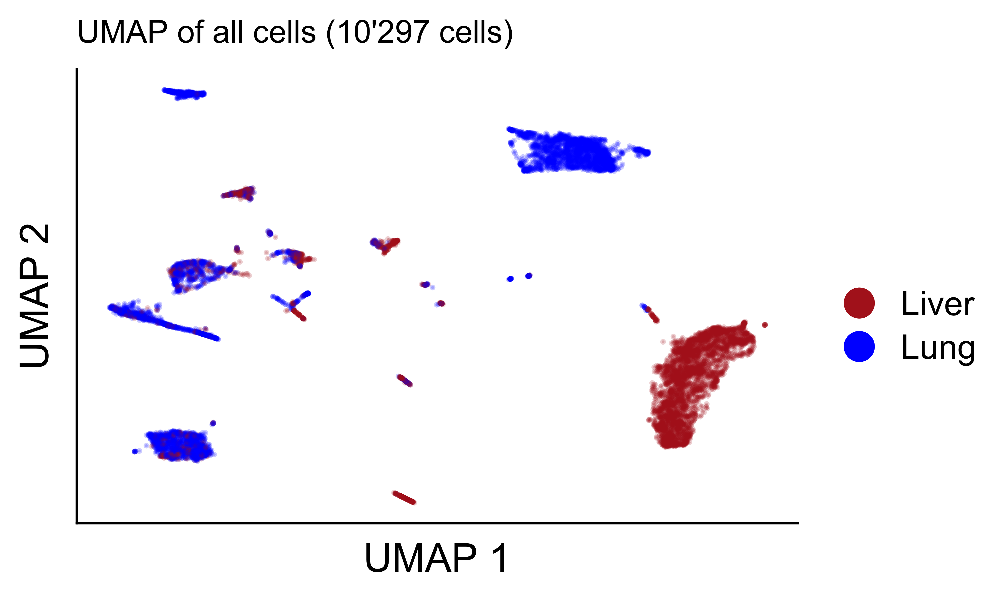
Showing only cell types with >= 50 cells
celltype_label <- 'celltype_immgen_pruned.labels'
use_celltypes <- colData(sce)[,celltype_label] %>% table %>% data.frame %>% filter(Freq >= 50) %>% collect %>% .[['.']] %>% as.character
use_sce <- sce[,colData(sce)[,celltype_label] %in% use_celltypes]
use_sce[[celltype_label]] <- factor(use_sce[[celltype_label]], levels = names(celltype_palette)[names(celltype_palette) %in% use_celltypes])
plotReducedDim(use_sce, dimred = 'UMAP.clust', colour_by=celltype_label, point_alpha = 0.2, point_size = 0.005) +
scale_color_manual(values = celltype_palette) +
guides(colour = guide_legend(override.aes = list(alpha = 1, size = 3))) +
labs(
x = 'UMAP 1',
y = 'UMAP 2',
color = '',
title = paste0('UMAP of all cells (',scales::number(ncol(sce), big.mark = "'"),' cells)')
) +
theme(
plot.title = element_text(size = 8, face = 'plain'),
axis.line = element_line(linewidth = rel(0.5)),
axis.text=element_blank(),
axis.ticks=element_blank()#,
# axis.line =element_blank()
)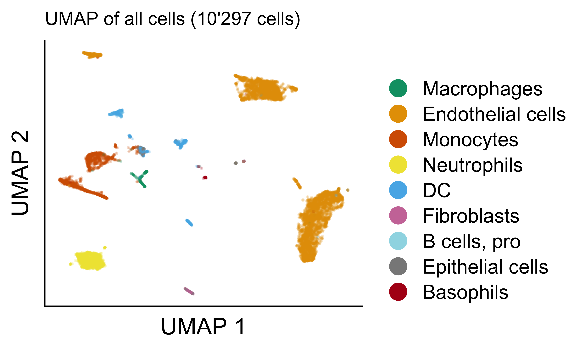
Differential abundance of cell types using individual cell annotations
ct_label <- 'celltype_immgen_pruned.labels'Differential abundance using speckle::propeller
package
use_data <- colData(sce) %>% data.frame %>%
mutate(
sample = paste(site, mouse_hto, sep = '_')
)
#dplyr::rename('celltype_label' = ct_label) %>%
# Remove low abundant cell types
keep_labels <- table(use_data[[ct_label]]) %>% data.frame %>% filter(Freq >= 100) %>% pull(Var1)
keep_rows <- use_data[[ct_label]] %in% keep_labels
use_data <- use_data[keep_rows,]
# Run propeller Global
propeller_global <- propeller(clusters = use_data[[ct_label]], sample = use_data$sample, group = use_data$site) %>%
rownames_to_column('cell_type')
# Run pairwise propeller to obtaib P-values
site_levels <- use_data$site_caps %>% unique
site_combn <- combn(site_levels, 2, simplify = FALSE)
sc <- site_combn[[1]]
propeller_pairwise <-foreach(sc = site_combn, .combine = rbind) %do% {
use_data <- colData(sce) %>% data.frame %>%
filter(site_caps %in% sc) %>%
mutate(
sample = paste(mouse_hto, site_caps, sep = '_'),
group = ifelse(site_caps == sc[1], 'group1', 'group2')
)
keep_rows <- use_data[[ct_label]] %in% keep_labels
use_data <- use_data[keep_rows,]
propeller(clusters = use_data[[ct_label]], sample = use_data$sample, group = use_data$group) %>%
mutate(
group1 = sc[1],
group2 = sc[2],
FDR.sign = symnum(FDR, corr = FALSE, na = FALSE, cutpoints = c(0, 0.0001,0.001, 0.01, 0.05, 1), symbols = c("****", "***", "**", "*", "")),
p.sign = symnum(P.Value, corr = FALSE, na = FALSE, cutpoints = c(0, 0.0001, 0.001, 0.01, 0.05, 1), symbols = c("****", "***", "**", "*", ""))
) %>%
dplyr::rename(cell_type = BaselineProp.clusters)
}Table of results with pairwise comparison between sites for cluster abundance.
propeller_pairwise %>%
arrange(FDR) %>%
datatable(.,
rownames = FALSE,
filter = 'top',
caption = 'Pairwise comparison between cell types for cluster abundance using speckle::propeller',
extensions = 'Buttons',
options = list(
dom = 'Blfrtip',
buttons = c('csv', 'excel')
)) %>%
formatPercentage(names(propeller_pairwise)[2:4], digits = 3) %>%
formatRound(names(propeller_pairwise)[5:6], digits = 3, interval = -1000) %>%
formatSignif(c('P.Value', 'FDR'), digits = 3)# Create data
use_data <- colData(sce) %>%
data.frame %>%
dplyr::rename('celltype_label' = ct_label) %>%
group_by(site_caps, celltype_label) %>%
summarise(freq = n()) %>%
dplyr::rename(cell_type = celltype_label) %>%
na.omit()
# Remove low abundant cell types
cell_type_freq <- use_data %>% group_by(cell_type) %>% summarise(totalfreq = sum(freq))
site_filtered <- use_data %>% group_by(site_caps) %>% summarise(freq = sum(freq)) %>% filter(freq >= 500)
use_data <- use_data %>%
filter(site_caps %in% site_filtered$site_caps) %>%
left_join(cell_type_freq) %>%
filter(totalfreq >= 50) %>%
mutate(cell_type = fct_reorder(cell_type, totalfreq))
# Arrange data and add labels
arranged_data <- use_data %>%
arrange(site_caps, cell_type)%>%
group_by(site_caps) %>%
mutate(
totalfreq_by_site = sum(freq),
proportion = freq/ totalfreq_by_site,
label_y = cumsum(freq)/ totalfreq_by_site,
label_y = label_y - 0.5 * (freq / totalfreq_by_site),
cell_type = fct_reorder(cell_type, totalfreq, .desc = TRUE),
cell_type_label = as.character(cell_type),
cell_type_label = ifelse(proportion < 0.03, '', cell_type_label)
)i <- unique(arranged_data$site_caps)[1]
use_data <- foreach(i = unique(arranged_data$site_caps), .combine = rbind) %do% {
x <- arranged_data %>%
filter(site_caps == i) %>%
arrange(cell_type)
x$ymax <- cumsum(x$proportion)
x$ymin <- c(0, head(x$ymax, n = -1))
x
}
use_data %>%
ggplot(aes(ymax=ymax, ymin=ymin, xmax=4, xmin=3, fill=cell_type)) +
geom_rect() +
coord_polar(theta="y") + # Try to remove that to understand how the chart is built initially
xlim(c(2, 4)) + # Try to remove that to see how to make a pie chart
scale_fill_manual(values = celltype_palette) +
facet_wrap(vars(site_caps), ncol = 3) +
theme(
strip.background = element_blank(),
axis.text=element_blank(),
axis.ticks=element_blank(),
axis.line =element_blank()
) +
labs(
fill = '',
x = NULL,
y = NULL
)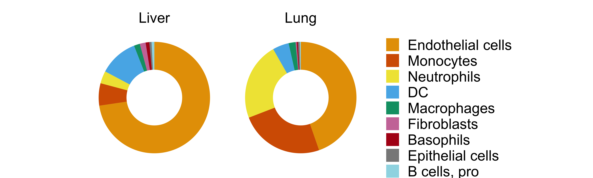
# Create data
use_data <- colData(sce) %>%
data.frame %>%
dplyr::rename('celltype_label' = ct_label) %>%
group_by(site_caps, mouse_hto, celltype_label) %>%
summarise(freq = n()) %>%
dplyr::rename(cell_type = celltype_label) %>%
na.omit()
# Remove low abundant cell types and sites
cell_type_freq <- use_data %>% group_by(cell_type) %>% summarise(totalfreq = sum(freq))
site_filtered <- use_data %>% group_by(site_caps) %>% summarise(freq = sum(freq)) %>% filter(freq >= 500)
use_data <- use_data %>%
filter(site_caps %in% site_filtered$site_caps) %>%
left_join(cell_type_freq) %>%
filter(totalfreq >= 50) %>%
mutate(cell_type = fct_reorder(cell_type, totalfreq))
# Arrange data and add labels
arranged_data <- use_data %>%
arrange(site_caps, cell_type)%>%
group_by(site_caps, mouse_hto) %>%
mutate(
totalfreq_by_site = sum(freq),
proportion = freq/ totalfreq_by_site,
label_y = cumsum(freq)/ totalfreq_by_site,
label_y = label_y - 0.5 * (freq / totalfreq_by_site),
cell_type = fct_reorder(cell_type, totalfreq, .desc = TRUE),
cell_type_label = as.character(cell_type),
cell_type_label = ifelse(proportion < 0.03, '', cell_type_label)
)i <- unique(arranged_data$site_caps)[1]
use_data <- foreach(i = unique(arranged_data$site_caps), .combine = rbind) %do% {
foreach(j = unique(arranged_data$mouse_hto), .combine = rbind) %do% {
x <- arranged_data %>%
filter(site_caps == i & mouse_hto == j) %>%
arrange(cell_type)
x$ymax <- cumsum(x$proportion)
x$ymin <- c(0, head(x$ymax, n = -1))
x
}
}
use_data %>%
ggplot(aes(ymax=ymax, ymin=ymin, xmax=4, xmin=3, fill=cell_type)) +
geom_rect() +
coord_polar(theta="y") + # Try to remove that to understand how the chart is built initially
xlim(c(2, 4)) + # Try to remove that to see how to make a pie chart
scale_fill_manual(values = celltype_palette) +
facet_grid(mouse_hto ~ site_caps) +
theme(
strip.background = element_blank(),
axis.text=element_blank(),
axis.ticks=element_blank(),
axis.line =element_blank()
) +
labs(
fill = '',
x = NULL,
y = NULL
)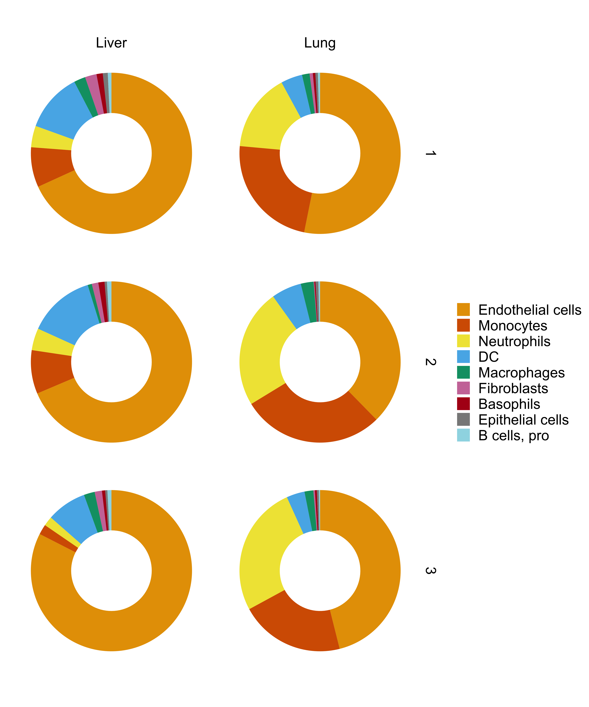
max_prop_cell_type <- arranged_data %>% group_by(cell_type) %>% summarise(max_proportion = max(proportion))
stat_test <- propeller_pairwise %>%
filter(group1 %in% arranged_data$site_caps & group2 %in% arranged_data$site_caps) %>%
left_join(max_prop_cell_type) %>%
arrange(cell_type, group1, group2) %>%
na.omit() %>%
filter(FDR < 0.05)
add_count_y <- stat_test %>% group_by(cell_type) %>% reframe(group1 = group1, group2 = group2, n = 1:n())
stat_test <- stat_test %>% left_join(add_count_y) %>% mutate(y.position = max_proportion + (n*max_proportion/10))
arranged_data %>%
ggplot(aes(x = site_caps, y = proportion, color = site_caps)) +
geom_boxplot(alpha = 0.4, color = 'black', aes(fill = site_caps),
show.legend = FALSE, size = 0.25, fatten = 1) +
# geom_point(alpha = 1, size = 2, shape = 21, color = 'black', aes(fill = site_caps)) +
geom_quasirandom(method="smiley", width = 0.1, alpha = 1, size = 1,
shape = 21, color = 'black', aes(fill = site_caps), stroke = 0.4) +
# geom_quasirandom(method="smiley", width = 0.1, alpha = 1, size = 1, aes(color = site_caps)) +
# scale_fill_OkabeIto() +
# scale_color_OkabeIto() +
scale_fill_manual(values = site_palette) +
scale_color_manual(values = site_palette) +
# scale_y_continuous(expand = c(0, 0)) +
scale_y_continuous(expand = c(0.02, 0, 0.08, 0)) +
scale_x_discrete(expand = c(0, 0.5)) +
facet_wrap(vars(cell_type), scales = 'free_y', ncol = 2) +
theme(
# strip.background = element_blank(),
# axis.text.x = element_text(angle = 90, vjust = 0.5, hjust=1),
axis.text.x=element_blank(),
axis.ticks.x=element_blank(),
panel.border = element_rect(colour = "black", size=0.5),
strip.background = element_blank()
) +
# guides( color = 'none') +
guides(fill = guide_legend(override.aes = list(size = 3))) +
labs(
fill = NULL,
x = NULL,
y = 'Proportion of cells'
) +
stat_pvalue_manual(stat_test, label = 'FDR.sign', size = 2)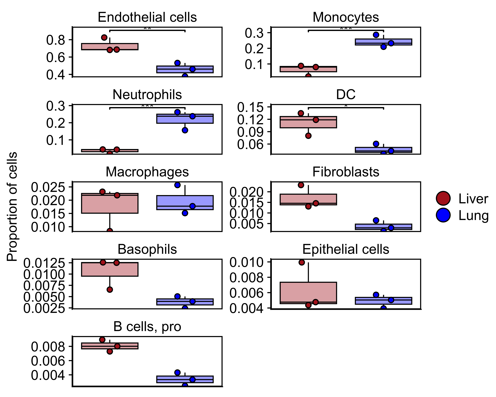
For each cell type we tried to identify potential markers to distinguish between sites
n_top_mk <- 10
celltype_label <- 'celltype_immgen_pruned.labels'
j <- score_markers$site_celltype_markers[[1]][[1]]
mk_list <- foreach(i = score_markers$site_celltype_markers) %do% {
foreach(j = i, .combine = c) %do% {
j %>% data.frame %>% arrange(desc(mean.AUC)) %>% head(n_top_mk) %>% rownames( d)
} %>% unique
}
names(mk_list) <- names(score_markers$site_celltype_markers)In the plot below, color represent the Z-score based on average expression of the gene in each group. Z score is limited to -2 to 2 range. Point size represent the proportion of cells with detected expression.
use_celltype_label <- 'DC'
use_rows <- mk_list[[use_celltype_label]]
use_cols <- (sce[[celltype_label]] == use_celltype_label & !is.na(sce[[celltype_label]]))
use_sce <- sce[use_rows, use_cols]
rownames(use_sce) <- rowData(use_sce)$gene_name
res_plot <- plotDots(
use_sce,
features=rownames(use_sce),
group='site_caps',
center=TRUE, scale = TRUE,
zlim = c(-2,2)
)
# Get data
plot_data <- ggplot_build(res_plot)$plot$data %>%
mutate(Group = factor(Group, levels = rev(c('Primary tumor', 'Liver', 'Lung'))))
# Create color scale
group <- retrieveCellInfo(use_sce, 'site_caps', search="colData")$value
ids <- DataFrame(group=group)
summarized <- summarizeAssayByGroup(
assay(use_sce, "logcounts")[as.character(rownames(use_sce)), , drop = FALSE],
ids=ids,
statistics=c("mean", "prop.detected"),
threshold=0)
ave <- assay(summarized, "mean")
use_heatmap_scale <- heatmap_scale(ave,
center=TRUE,
scale=TRUE,
colour=NULL,
zlim=c(-2,2))
res_plot <- ggplot(plot_data) +
geom_point(aes(x=.data$Group,
y=.data$Feature,
size=.data$NumDetected,
# col=.data$Average,
fill=.data$Average),
pch = 21,
color = 'black') +
scale_size(limits=c(0, max(plot_data$NumDetected))) +
# use_heatmap_scale$colour_scale +
use_heatmap_scale$fill_scale +
# theme_minimal() +
theme(
panel.border = element_rect(colour = "black", fill=NA, linewidth = 2*one_pt)
) +
coord_flip() +
scale_y_discrete(guide = guide_axis(angle = 45)) +
labs(
x = '',
y = '',
color = 'Z-score',
size = 'Proportion\nof cells'
)
res_plot + theme( legend.position = "none")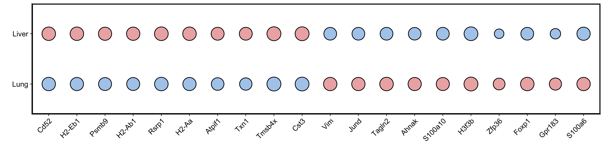
In the plot below, color represent the Z-score based on average expression of the gene in each group. Z score is limited to -2 to 2 range. Point size represent the proportion of cells with detected expression.
use_celltype_label <- 'Endothelial cells'
use_rows <- mk_list[[use_celltype_label]]
use_cols <- (sce[[celltype_label]] == use_celltype_label & !is.na(sce[[celltype_label]]))
use_sce <- sce[use_rows, use_cols]
rownames(use_sce) <- rowData(use_sce)$gene_name
res_plot <- plotDots(
use_sce,
features=rownames(use_sce),
group='site_caps',
center=TRUE, scale = TRUE,
zlim = c(-2,2)
)
# Get data
plot_data <- ggplot_build(res_plot)$plot$data %>%
mutate(Group = factor(Group, levels = rev(c('Primary tumor', 'Liver', 'Lung'))))
# Create color scale
group <- retrieveCellInfo(use_sce, 'site_caps', search="colData")$value
ids <- DataFrame(group=group)
summarized <- summarizeAssayByGroup(
assay(use_sce, "logcounts")[as.character(rownames(use_sce)), , drop = FALSE],
ids=ids,
statistics=c("mean", "prop.detected"),
threshold=0)
ave <- assay(summarized, "mean")
use_heatmap_scale <- heatmap_scale(ave,
center=TRUE,
scale=TRUE,
colour=NULL,
zlim=c(-2,2))
res_plot <- ggplot(plot_data) +
geom_point(aes(x=.data$Group,
y=.data$Feature,
size=.data$NumDetected,
# col=.data$Average,
fill=.data$Average),
pch = 21,
color = 'black') +
scale_size(limits=c(0, max(plot_data$NumDetected))) +
# use_heatmap_scale$colour_scale +
use_heatmap_scale$fill_scale +
# theme_minimal() +
theme(
panel.border = element_rect(colour = "black", fill=NA, linewidth = 2*one_pt)
) +
coord_flip() +
scale_y_discrete(guide = guide_axis(angle = 45)) +
labs(
x = '',
y = '',
color = 'Z-score',
size = 'Proportion\nof cells'
)
res_plot + theme( legend.position = "none")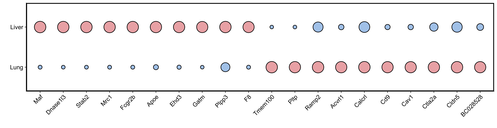
In the plot below, color represent the Z-score based on average expression of the gene in each group. Z score is limited to -2 to 2 range. Point size represent the proportion of cells with detected expression.
use_celltype_label <- 'Macrophages'
use_rows <- mk_list[[use_celltype_label]]
use_cols <- (sce[[celltype_label]] == use_celltype_label & !is.na(sce[[celltype_label]]))
use_sce <- sce[use_rows, use_cols]
rownames(use_sce) <- rowData(use_sce)$gene_name
res_plot <- plotDots(
use_sce,
features=rownames(use_sce),
group='site_caps',
center=TRUE, scale = TRUE,
zlim = c(-2,2)
)
# Get data
plot_data <- ggplot_build(res_plot)$plot$data %>%
mutate(Group = factor(Group, levels = rev(c('Primary tumor', 'Liver', 'Lung'))))
# Create color scale
group <- retrieveCellInfo(use_sce, 'site_caps', search="colData")$value
ids <- DataFrame(group=group)
summarized <- summarizeAssayByGroup(
assay(use_sce, "logcounts")[as.character(rownames(use_sce)), , drop = FALSE],
ids=ids,
statistics=c("mean", "prop.detected"),
threshold=0)
ave <- assay(summarized, "mean")
use_heatmap_scale <- heatmap_scale(ave,
center=TRUE,
scale=TRUE,
colour=NULL,
zlim=c(-2,2))
res_plot <- ggplot(plot_data) +
geom_point(aes(x=.data$Group,
y=.data$Feature,
size=.data$NumDetected,
# col=.data$Average,
fill=.data$Average),
pch = 21,
color = 'black') +
scale_size(limits=c(0, max(plot_data$NumDetected))) +
# use_heatmap_scale$colour_scale +
use_heatmap_scale$fill_scale +
# theme_minimal() +
theme(
panel.border = element_rect(colour = "black", fill=NA, linewidth = 2*one_pt)
) +
coord_flip() +
scale_y_discrete(guide = guide_axis(angle = 45)) +
labs(
x = '',
y = '',
color = 'Z-score',
size = 'Proportion\nof cells'
)
res_plot + theme( legend.position = "none")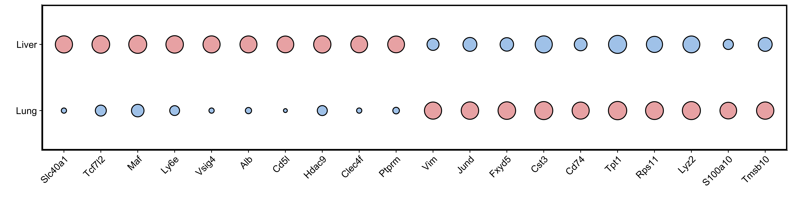
In the plot below, color represent the Z-score based on average expression of the gene in each group. Z score is limited to -2 to 2 range. Point size represent the proportion of cells with detected expression.
use_celltype_label <- 'Monocytes'
use_rows <- mk_list[[use_celltype_label]]
use_cols <- (sce[[celltype_label]] == use_celltype_label & !is.na(sce[[celltype_label]]))
use_sce <- sce[use_rows, use_cols]
rownames(use_sce) <- rowData(use_sce)$gene_name
res_plot <- plotDots(
use_sce,
features=rownames(use_sce),
group='site_caps',
center=TRUE, scale = TRUE,
zlim = c(-2,2)
)
# Get data
plot_data <- ggplot_build(res_plot)$plot$data %>%
mutate(Group = factor(Group, levels = rev(c('Primary tumor', 'Liver', 'Lung'))))
# Create color scale
group <- retrieveCellInfo(use_sce, 'site_caps', search="colData")$value
ids <- DataFrame(group=group)
summarized <- summarizeAssayByGroup(
assay(use_sce, "logcounts")[as.character(rownames(use_sce)), , drop = FALSE],
ids=ids,
statistics=c("mean", "prop.detected"),
threshold=0)
ave <- assay(summarized, "mean")
use_heatmap_scale <- heatmap_scale(ave,
center=TRUE,
scale=TRUE,
colour=NULL,
zlim=c(-2,2))
res_plot <- ggplot(plot_data) +
geom_point(aes(x=.data$Group,
y=.data$Feature,
size=.data$NumDetected,
# col=.data$Average,
fill=.data$Average),
pch = 21,
color = 'black') +
scale_size(limits=c(0, max(plot_data$NumDetected))) +
# use_heatmap_scale$colour_scale +
use_heatmap_scale$fill_scale +
# theme_minimal() +
theme(
panel.border = element_rect(colour = "black", fill=NA, linewidth = 2*one_pt)
) +
coord_flip() +
scale_y_discrete(guide = guide_axis(angle = 45)) +
labs(
x = '',
y = '',
color = 'Z-score',
size = 'Proportion\nof cells'
)
res_plot + theme( legend.position = "none")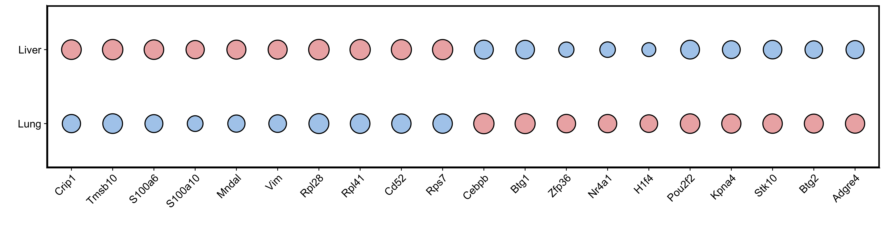
In the plot below, color represent the Z-score based on average expression of the gene in each group. Z score is limited to -2 to 2 range. Point size represent the proportion of cells with detected expression.
use_celltype_label <- 'Neutrophils'
use_rows <- mk_list[[use_celltype_label]]
use_cols <- (sce[[celltype_label]] == use_celltype_label & !is.na(sce[[celltype_label]]))
use_sce <- sce[use_rows, use_cols]
rownames(use_sce) <- rowData(use_sce)$gene_name
res_plot <- plotDots(
use_sce,
features=rownames(use_sce),
group='site_caps',
center=TRUE, scale = TRUE,
zlim = c(-2,2)
)
# Get data
plot_data <- ggplot_build(res_plot)$plot$data %>%
mutate(Group = factor(Group, levels = rev(c('Primary tumor', 'Liver', 'Lung'))))
# Create color scale
group <- retrieveCellInfo(use_sce, 'site_caps', search="colData")$value
ids <- DataFrame(group=group)
summarized <- summarizeAssayByGroup(
assay(use_sce, "logcounts")[as.character(rownames(use_sce)), , drop = FALSE],
ids=ids,
statistics=c("mean", "prop.detected"),
threshold=0)
ave <- assay(summarized, "mean")
use_heatmap_scale <- heatmap_scale(ave,
center=TRUE,
scale=TRUE,
colour=NULL,
zlim=c(-2,2))
res_plot <- ggplot(plot_data) +
geom_point(aes(x=.data$Group,
y=.data$Feature,
size=.data$NumDetected,
# col=.data$Average,
fill=.data$Average),
pch = 21,
color = 'black') +
scale_size(limits=c(0, max(plot_data$NumDetected))) +
# use_heatmap_scale$colour_scale +
use_heatmap_scale$fill_scale +
# theme_minimal() +
theme(
panel.border = element_rect(colour = "black", fill=NA, linewidth = 2*one_pt)
) +
coord_flip() +
scale_y_discrete(guide = guide_axis(angle = 45)) +
labs(
x = '',
y = '',
color = 'Z-score',
size = 'Proportion\nof cells'
)
res_plot + theme( legend.position = "none")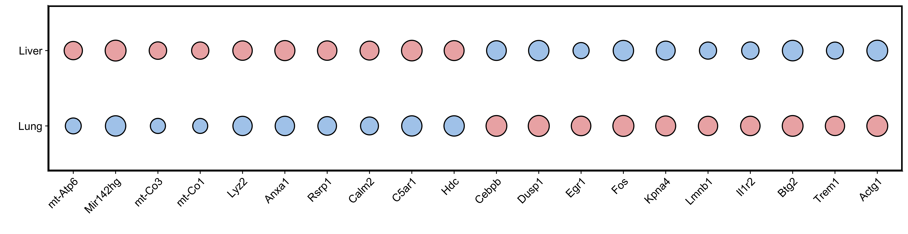
legend <- cowplot::get_legend(res_plot)
grid.newpage()
grid.draw(legend)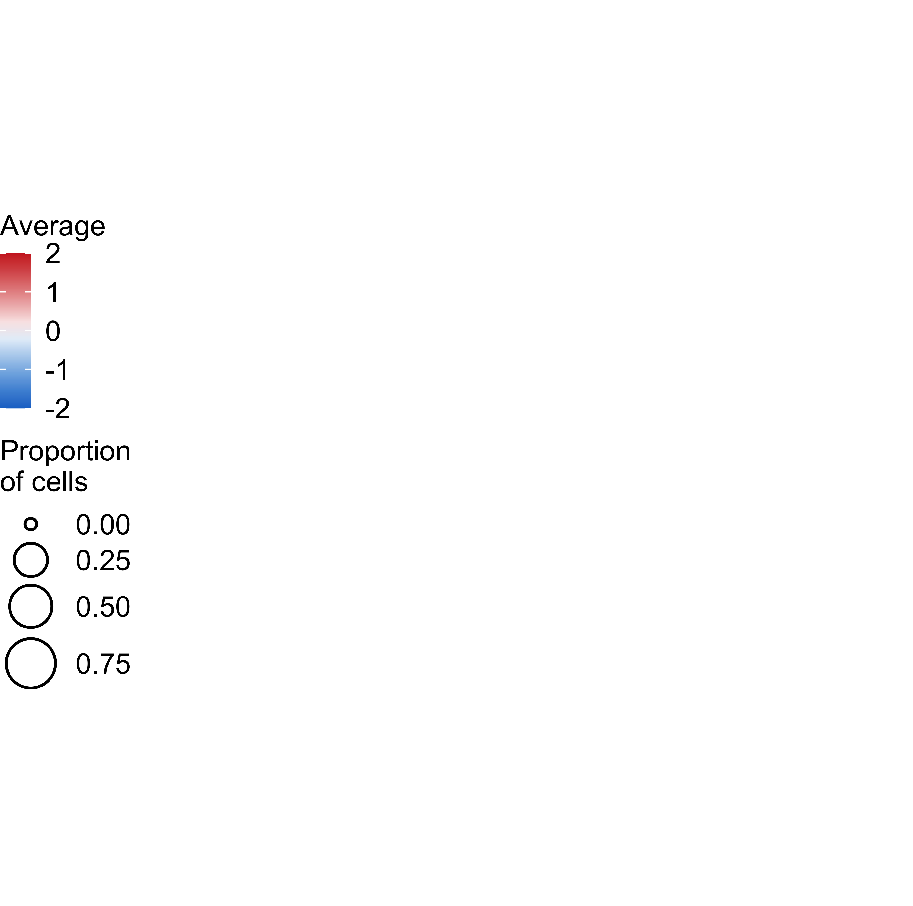
sessionInfo()R version 4.2.2 (2022-10-31) Platform: x86_64-apple-darwin17.0 (64-bit) Running under: macOS Big Sur … 10.16
Matrix products: default BLAS: /Library/Frameworks/R.framework/Versions/4.2/Resources/lib/libRblas.0.dylib LAPACK: /Library/Frameworks/R.framework/Versions/4.2/Resources/lib/libRlapack.dylib
locale: [1] en_US.UTF-8/en_US.UTF-8/en_US.UTF-8/C/en_US.UTF-8/en_US.UTF-8
attached base packages: [1] grid stats4 stats graphics grDevices utils datasets [8] methods base
other attached packages: [1] SingleR_2.0.0 PCAtools_2.10.0
[3] ggrepel_0.9.4 factoextra_1.0.7
[5] corrplot_0.92 circlize_0.4.15
[7] GSVA_1.46.0 clusterProfiler_4.6.0
[9] ComplexHeatmap_2.14.0 miloR_1.6.0
[11] edgeR_3.40.2 limma_3.54.1
[13] speckle_0.0.3 scDblFinder_1.13.8
[15] bluster_1.8.0 batchelor_1.14.1
[17] BiocSingular_1.14.0 scran_1.26.2
[19] SeuratObject_4.1.3 Seurat_4.3.0
[21] DropletUtils_1.18.1 scater_1.26.1
[23] scuttle_1.8.4 SingleCellExperiment_1.20.0 [25]
SummarizedExperiment_1.28.0 Biobase_2.58.0
[27] GenomicRanges_1.50.2 GenomeInfoDb_1.34.9
[29] IRanges_2.32.0 S4Vectors_0.36.1
[31] BiocGenerics_0.44.0 MatrixGenerics_1.10.0
[33] matrixStats_1.0.0 magrittr_2.0.3
[35] openxlsx_4.2.5.2 patchwork_1.1.3
[37] pheatmap_1.0.12 ggpubr_0.6.0
[39] RColorBrewer_1.1-3 arsenal_3.6.3
[41] ggbeeswarm_0.7.2 colorblindr_0.1.0
[43] colorspace_2.1-1 cowplot_1.1.1
[45] kableExtra_1.3.4 knitr_1.44
[47] DT_0.30 foreach_1.5.2
[49] showtext_0.9-6 showtextdb_3.0
[51] sysfonts_0.8.8 lubridate_1.9.3
[53] forcats_1.0.0 stringr_1.5.1
[55] dplyr_1.1.4 purrr_1.0.2
[57] readr_2.1.4 tidyr_1.3.1
[59] tibble_3.2.1 ggplot2_3.5.0
[61] tidyverse_2.0.0 workflowr_1.7.1
loaded via a namespace (and not attached): [1] rsvd_1.0.5
ica_1.0-3
[3] svglite_2.1.2 ps_1.7.5
[5] Rsamtools_2.14.0 lmtest_0.9-40
[7] rprojroot_2.0.3 crayon_1.5.2
[9] MASS_7.3-60 rhdf5filters_1.10.0
[11] nlme_3.1-163 backports_1.4.1
[13] GOSemSim_2.24.0 rlang_1.1.4
[15] HDO.db_0.99.1 XVector_0.38.0
[17] ROCR_1.0-11 irlba_2.3.5.1
[19] callr_3.7.3 xgboost_1.7.5.1
[21] BiocParallel_1.32.5 rjson_0.2.21
[23] bit64_4.0.5 glue_1.8.0
[25] sctransform_0.4.1 parallel_4.2.2
[27] processx_3.8.2 vipor_0.4.5
[29] spatstat.sparse_3.0-2 AnnotationDbi_1.60.0
[31] DOSE_3.24.2 spatstat.geom_3.2-7
[33] tidyselect_1.2.1 fitdistrplus_1.1-11
[35] XML_3.99-0.14 zoo_1.8-12
[37] GenomicAlignments_1.34.0 org.Mm.eg.db_3.16.0
[39] xtable_1.8-4 evaluate_0.22
[41] cli_3.6.3 zlibbioc_1.44.0
[43] rstudioapi_0.15.0 miniUI_0.1.1.1
[45] sp_2.1-1 whisker_0.4.1
[47] bslib_0.5.1 fastmatch_1.1-4
[49] treeio_1.22.0 shiny_1.7.5.1
[51] xfun_0.40 clue_0.3-65
[53] gson_0.1.0 cluster_2.1.4
[55] tidygraph_1.2.3 KEGGREST_1.38.0
[57] ape_5.7-1 listenv_0.9.0
[59] Biostrings_2.66.0 png_0.1-8
[61] future_1.33.0 withr_3.0.1
[63] bitops_1.0-7 ggforce_0.4.1
[65] plyr_1.8.9 GSEABase_1.60.0
[67] dqrng_0.3.1 pillar_1.9.0
[69] GlobalOptions_0.1.2 cachem_1.0.8
[71] fs_1.6.4 GetoptLong_1.0.5
[73] DelayedMatrixStats_1.20.0 vctrs_0.6.5
[75] ellipsis_0.3.2 generics_0.1.3
[77] tools_4.2.2 beeswarm_0.4.0
[79] munsell_0.5.1 tweenr_2.0.2
[81] fgsea_1.24.0 DelayedArray_0.24.0
[83] fastmap_1.1.1 compiler_4.2.2
[85] abind_1.4-5 httpuv_1.6.8
[87] rtracklayer_1.58.0 plotly_4.10.3
[89] GenomeInfoDbData_1.2.9 gridExtra_2.3
[91] lattice_0.20-45 deldir_1.0-9
[93] utf8_1.2.4 later_1.3.1
[95] jsonlite_1.8.7 scales_1.3.0
[97] graph_1.76.0 ScaledMatrix_1.6.0
[99] tidytree_0.4.2 pbapply_1.7-2
[101] carData_3.0-5 sparseMatrixStats_1.10.0 [103] lazyeval_0.2.2
promises_1.2.1
[105] car_3.1-2 doParallel_1.0.17
[107] R.utils_2.12.2 goftest_1.2-3
[109] spatstat.utils_3.0-3 reticulate_1.34.0
[111] rmarkdown_2.25 statmod_1.5.0
[113] webshot_0.5.5 Rtsne_0.16
[115] downloader_0.4 uwot_0.1.16
[117] igraph_1.5.1 HDF5Array_1.26.0
[119] survival_3.5-7 ResidualMatrix_1.8.0
[121] yaml_2.3.7 systemfonts_1.1.0
[123] htmltools_0.5.6.1 memoise_2.0.1
[125] BiocIO_1.8.0 locfit_1.5-9.8
[127] graphlayouts_1.0.1 viridisLite_0.4.2
[129] digest_0.6.37 mime_0.12
[131] RSQLite_2.3.1 yulab.utils_0.1.7
[133] future.apply_1.11.0 data.table_1.14.8
[135] blob_1.2.4 R.oo_1.25.0
[137] labeling_0.4.3 splines_4.2.2
[139] Rhdf5lib_1.20.0 RCurl_1.98-1.12
[141] broom_1.0.5 hms_1.1.3
[143] rhdf5_2.42.0 shape_1.4.6
[145] aplot_0.2.2 sass_0.4.7
[147] Rcpp_1.0.13 RANN_2.6.1
[149] enrichplot_1.18.3 fansi_1.0.6
[151] tzdb_0.4.0 parallelly_1.36.0
[153] R6_2.5.1 ggridges_0.5.4
[155] lifecycle_1.0.4 zip_2.3.0
[157] ggsignif_0.6.4 leiden_0.4.3
[159] jquerylib_0.1.4 Matrix_1.5-3
[161] qvalue_2.30.0 RcppAnnoy_0.0.21
[163] org.Hs.eg.db_3.16.0 iterators_1.0.14
[165] spatstat.explore_3.2-3 htmlwidgets_1.6.2
[167] beachmat_2.14.0 polyclip_1.10-6
[169] crosstalk_1.2.0 shadowtext_0.1.2
[171] gridGraphics_0.5-1 timechange_0.2.0
[173] rvest_1.0.3 globals_0.16.2
[175] spatstat.random_3.2-1 progressr_0.14.0
[177] codetools_0.2-19 GO.db_3.16.0
[179] metapod_1.6.0 gtools_3.9.4
[181] getPass_0.2-2 R.methodsS3_1.8.2
[183] gtable_0.3.5 DBI_1.1.3
[185] git2r_0.32.0 highr_0.10
[187] ggfun_0.1.3 tensor_1.5
[189] httr_1.4.7 KernSmooth_2.23-22
[191] stringi_1.8.4 reshape2_1.4.4
[193] farver_2.1.2 annotate_1.76.0
[195] viridis_0.6.4 ggtree_3.4.4
[197] xml2_1.3.5 BiocNeighbors_1.16.0
[199] restfulr_0.0.15 ggplotify_0.1.2
[201] scattermore_1.2 bit_4.0.5
[203] scatterpie_0.2.1 spatstat.data_3.0-3
[205] ggraph_2.1.0 pkgconfig_2.0.3
[207] rstatix_0.7.2